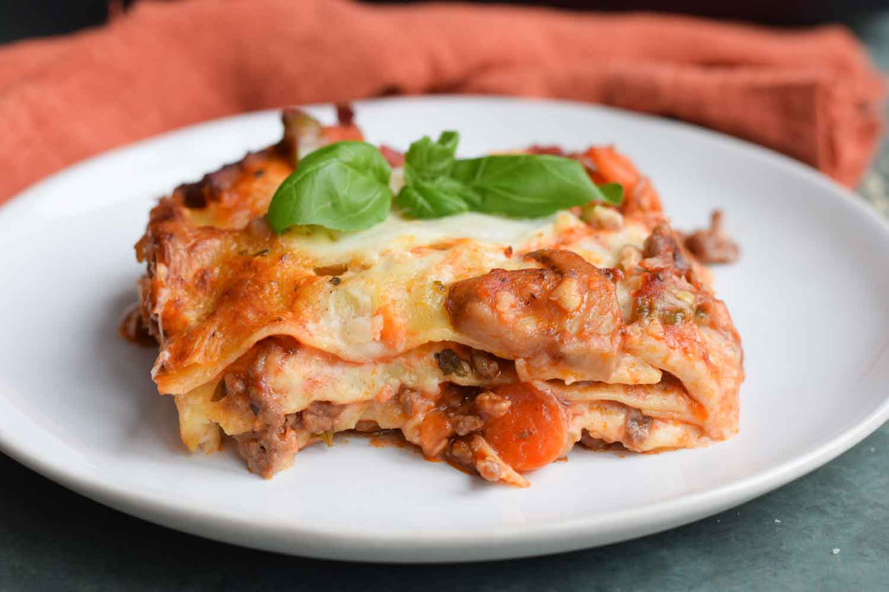

Return to Recipes
Lasagna

Delicious italian dish to share with the whole family!
Lasagna, is a type of pasta, made of very wide, flat sheets.
It is made of stacked layers of lasagna pasta alternating
with fillings such as ground meats, tomato sauce, vegetables,
cheeses and spices.
When assembled, it is then baked in an oven,
which results in baked pasta goodness!
Ingredients
- Dry Lasagna Pasta Sheets
- Bolognese Sauce
- Ricotta Cheese
- Spinach
- Salt
- Pepper
- Basil
- Low Moisture Mozzarella Cheese
- Grated Parmesan Cheese
Steps to Follow
- Preheat your oven to 190º Celsius (375º Fahrenheit)
- Boil your pasta sheets according to pack specifications
- In a separate pot, add water and a pinch of salt
- Let the water boil and add your spinach and boil for 4 to 5 minutes
- Rinse spinach in cold water to cool down
- Chop spinach in a cutting board until fine
- In a separate bowl, add the cut spinach, the ricotta and mix
- Add a layer of sauce to the bottom of an oven safe pan
- Layer your pasta sheets, sauce, ricotta, mozzarella and repeat
- Top with a final layer of mozzarella and grated parmesan cheese
- Place in the oven for 30 minutes
- Let rest for an hour, top with basil and serve
Return to Recipes